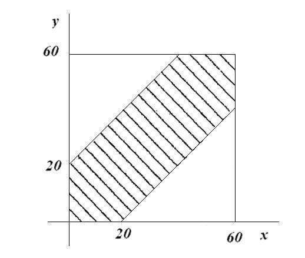

Задача о встрече
Задача №1
Условие:
Два друга договорились встретиться в определенном месте между 12 и 13 часами. Пришедший первым ждет другого в течении 20 минут, после чего уходит. Чему равна вероятность встречи друзей, если приход каждого из них может произойти наудачу в течении указанного часа и моменты прихода независимы?
Решение:
Пусть х - момент прихода первого друга, y - момент прихода второго друга, тогда:
0 ≤ х ≤ 60, 0 ≤ у ≤ 60
| х - у | ≤ 20
Сделаем рисунок
S закрашенной фигуры = 602 – 2 · 1/2 · 402 = 2000
P(A) = 2000/602 = 5/9.
Ответ:
Вероятность встречи = 5/9.
Задача №2
Условие:
Три человека договорились встретиться в промежутке с 9 до 12 часов на следующем условии: все они выбирают время в рамках данного промежутка, пришедший на место ждет не более 60 минут, после чего уходит. Найти вероятность того, что встреча состоится.
Решение:
Пусть случайные величины X,Y,Z - моменты прихода людей на место встречи. Будем считать, что это независимые случайные величины, равномерно распределённые на промежутке [0,1]. Введём случайную величину ξ, равную минимальному значению из этих трёх величин, т.е. ξ = min{X,Y,Z}.
Определим функцию распределения и плотность этой случайной величины. При t ∈ [0,1] для функции распределения получаем
.png)
Плотность находится дифференцированием f(t)=3(1−t)2
Пусть случайное событие A – встреча этих троих людей, если, пришедший первым ждёт обоих не более h = 20/60 = 1/3 части часа.
Используем интегральную форму теоремы о полной вероятности события
.png)
Вычислим условные вероятности P(A|ξ=t) – вероятность встречи, если первый пришёл в момент t. Если первый пришёл в момент t, то второй и третий пришли в любой момент времени из промежутка [t,1]. Чтобы встреча состоялась, надо чтобы моменты прихода остальных попали в промежуток времени [t,t+h]. Поэтому
.png)
Подставим это выражение в интеграл
.png)
При h=1/3 получим P(A)=0.26
Графически решение задачи выглядит следующим образом